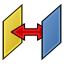
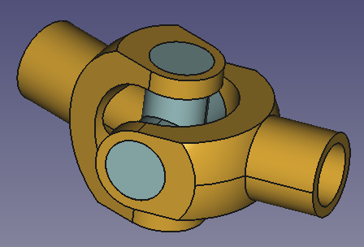
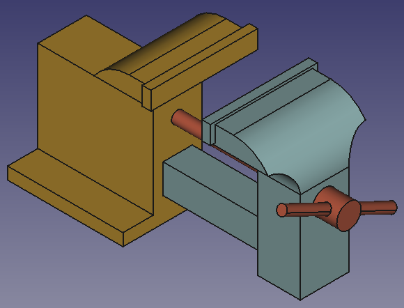
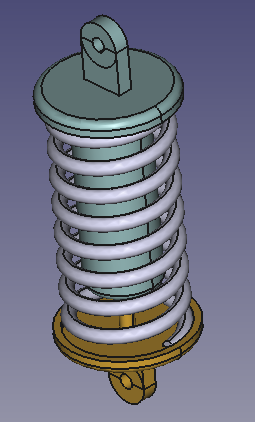
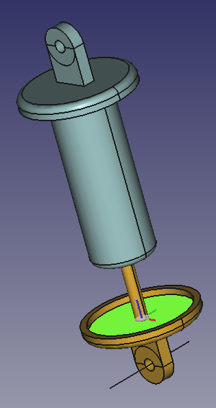
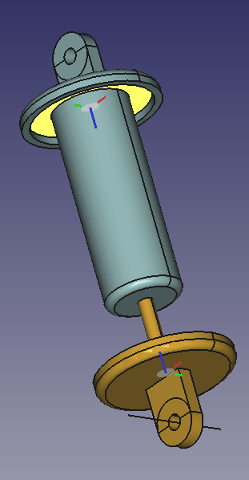
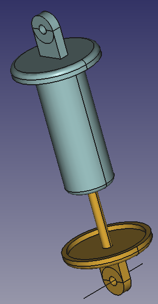

Assembly Workbench/es

Introducción
El 24px Entorno de trabajo de Ensamblaje es el Entorno de trabajo de ensamblaje integrado de FreeCAD. Utiliza el solucionador Ondsel de código abierto [1].
{kind=link}
{kind=link}
Herramientas
Ensamblaje
 Nuevo ensamble: Crea un ensamblaje raíz en el documento actual o un subensamblaje en un ensamblaje activo preexistente.
Nuevo ensamble: Crea un ensamblaje raíz en el documento actual o un subensamblaje en un ensamblaje activo preexistente.
{kind=link}
- Componente: Inserta un componente en el ensamblaje activo.
 Nueva pieza: Inserta una nueva pieza.
Nueva pieza: Inserta una nueva pieza.
- Resolver ensamblaje: Resuelve el ensamblaje actualmente activo.
{kind=link}
- Vista explosionada: Crea un contenedor de vistas explosionadas en el ensamblado activo que contiene una o más vistas explosionadas.
{kind=link}
 Simulación: Crea una simulación del ensamblaje actual. introduced in 1.1
Simulación: Crea una simulación del ensamblaje actual. introduced in 1.1
 Lista de materiales: Crea una lista de materiales (BOM) a partir de un ensamblaje seleccionado o del documento.
Lista de materiales: Crea una lista de materiales (BOM) a partir de un ensamblaje seleccionado o del documento.
- Export ASMT File: Exporta los datos del ensamblaje activo actual como un archivo ASMT para fines de depuración.
{kind=link}
- Esta herramienta está dirigida a desarrolladores y no se incluirá en futuras versiones. (Ver hilo del foro)
Articulaciones
 Alternar conexión a tierra: Fija la posición y orientación de una forma en relación con el sistema de coordenadas del ensamblaje al que pertenece.
Alternar conexión a tierra: Fija la posición y orientación de una forma en relación con el sistema de coordenadas del ensamblaje al que pertenece.
 Fijar articulación: Crea una unión que bloquea dos piezas de ensamblaje, impidiendo cualquier movimiento o rotación, pero también se puede utilizar para definir otros tipos de uniones.
Fijar articulación: Crea una unión que bloquea dos piezas de ensamblaje, impidiendo cualquier movimiento o rotación, pero también se puede utilizar para definir otros tipos de uniones.
 Articulación de revolución: Crea una articulación de bisagra, que permite la rotación alrededor de un solo eje entre dos piezas seleccionadas.
Articulación de revolución: Crea una articulación de bisagra, que permite la rotación alrededor de un solo eje entre dos piezas seleccionadas.
- Unión cilíndrica: Crea una unión cilíndrica entre dos piezas seleccionadas, permitiendo la rotación alrededor de un solo eje y un movimiento a lo largo del mismo eje.
{kind=link}
- Articulación deslizante: Crea una articulación deslizante (prismática) entre dos piezas seleccionadas, permitiendo un movimiento lineal a lo largo de un solo eje mientras restringe la rotación.
{kind=link}
- Articulación esférica: Crea una articulación esférica entre dos piezas seleccionadas en un solo punto, permitiendo la rotación libre alrededor del punto mientras se mantienen ambas piezas conectadas en este punto.
{kind=link}

Unión de distancia: Crea una unión de distancia entre dos piezas seleccionadas, fijando la distancia entre ambas piezas.
{kind=link}
- Unión paralela: Crea una unión paralela entre dos piezas seleccionadas, estableciendo los ejes Z de los sistemas de coordenadas seleccionados en paralelo.
{kind=link}
- Unión perpendicular: Crea una unión perpendicular entre dos piezas seleccionadas, estableciendo los ejes Z de los sistemas de coordenadas seleccionados como perpendiculares.
{kind=link}
- Articulación angular: Crea una unión angular entre dos piezas seleccionadas, fijando el ángulo entre los ejes Z de los sistemas de coordenadas seleccionados.
{kind=link}
- Articulación de cremallera y piñon: Crea una articulación de cremallera y piñón que acopla la traslación de una parte de una articulación deslizante y la rotación de una parte de una articulación de revolución.
{kind=link}
- Unión helioical: Crea una unión de tornillo (helicoidal) que acopla la traslación de una parte de una unión deslizante y la rotación de una parte de una unión de revolución.
{kind=link}
{kind=link}
- Unión de engranajes: Crea una unión de engranajes que acopla la rotación de dos partes de dos articulaciones de revolución diferentes.
- Unión de correa: Crea una unión de correa que acopla la rotación de dos partes de dos articulaciones de revolución diferentes.
{kind=link}
Preferencias
- Preferences: Preferencias para el Entorno de Trabajo de Ensamblaje.
{kind=link}
Ejemplo de manivela y corredera
 Este ejemplo es temporal y puede ser eliminado una vez que estén disponibles las descripciones/tutoriales adecuados.
Este ejemplo es temporal y puede ser eliminado una vez que estén disponibles las descripciones/tutoriales adecuados.
Conjunto de manivela y corredera
El conjunto a crear consta de cuatro partes: una base, una varilla deslizante, una manivela y una biela. Estas se conectan mediante cuatro articulaciones.
Preparar las piezas
En este ejemplo, todas las piezas y el ensamblaje se crean en un solo documento.
Las geometrías cilíndricas de los objetos son paralelas o perpendiculares; el resto de las formas no son relevantes para este ejemplo, a menos que haya colisiones. Teniendo esto en cuenta, puede modelar sus propios objetos o crearlos con el código Python que se muestra a continuación. El código creará un nuevo documento con los cuatro objetos (más sencillo que en las imágenes). Simplemente copie y pegue las siguientes líneas en la Consola de Python:
import FreeCAD as App
import FreeCADGui as Gui
import Part
doc = App.newDocument()
box1 = Part.makeBox(140, 40, 7, App.Vector(0, -20, 0))
cyl1 = Part.makeCylinder(4, 8, App.Vector(120, 0, 7))
box2 = Part.makeBox(20, 12, 10, App.Vector(5, -6, 7))
cyl2 = Part.makeCylinder(6, 20, App.Vector(25, 0, 17), App.Vector(-1, 0, 0))
cyl3 = Part.makeCylinder(4, 20, App.Vector(25, 0, 17), App.Vector(-1, 0, 0))
shape = box1.fuse([cyl1, box2, cyl2]).removeSplitter().cut(cyl3)
base = doc.addObject("Part::Feature", "Base")
base.Shape = shape
box1 = Part.makeBox(4, 12, 12, App.Vector(-12, -6, 0))
box2 = Part.makeBox(14, 12, 4, App.Vector(-8, -6, 0))
cyl1 = Part.makeCylinder(4, 8, App.Vector(0, 0, 4))
cyl2 = Part.makeCylinder(4, 88, App.Vector(-12, 0, 6),App.Vector(-1, 0, 0))
shape = box1.fuse([box2, cyl1, cyl2]).removeSplitter()
slider_rod = doc.addObject("Part::Feature", "SliderRod")
slider_rod.Shape = shape
slider_rod.Placement.Base = App.Vector(100, -40, 0)
cyl1 = Part.makeCylinder(7.5, 4)
box1 = Part.makeBox(15, 30, 4, App.Vector(-7.5, 0, 0))
cyl2 = Part.makeCylinder(7.5, 4, App.Vector(0, 30, 0))
cyl3 = Part.makeCylinder(4, 6, App.Vector(0, 30, 4))
cyl4 = Part.makeCylinder(4, 4)
shape = cyl1.fuse([box1, cyl2]).removeSplitter().fuse(cyl3).cut(cyl4)
crank = doc.addObject("Part::Feature", "Crank")
crank.Shape = shape
crank.Placement.Base = App.Vector(125, -70, 0)
cyl1 = Part.makeCylinder(6, 4)
box1 = Part.makeBox(50, 12, 4, App.Vector(0, -6, 0))
cyl2 = Part.makeCylinder(6, 4, App.Vector(50, 0, 0))
cyl3 = Part.makeCylinder(4, 4)
cyl4 = Part.makeCylinder(4, 4, App.Vector(50, 0, 0))
shape = cyl1.fuse([box1, cyl2]).removeSplitter().cut(cyl3.fuse(cyl4))
connecting_rod = doc.addObject("Part::Feature", "ConnectingRod")
connecting_rod.Shape = shape
connecting_rod.Placement.Base = App.Vector(25, -70, 0)
mat = base.ViewObject.ShapeAppearance[0]
mat.DiffuseColor = (0.80, 0.60, 0.15, 0.0)
base.ViewObject.ShapeAppearance = (mat,)
mat = slider_rod.ViewObject.ShapeAppearance[0]
mat.DiffuseColor = (0.55, 0.70, 0.70, 0.0)
slider_rod.ViewObject.ShapeAppearance = (mat,)
mat = crank.ViewObject.ShapeAppearance[0]
mat.DiffuseColor = (0.70, 0.30, 0.20, 0.0)
crank.ViewObject.ShapeAppearance = (mat,)
mat = connecting_rod.ViewObject.ShapeAppearance[0]
mat.DiffuseColor = (0.55, 0.70, 0.0, 0.0)
connecting_rod.ViewObject.ShapeAppearance = (mat,)
doc.recompute()
view = Gui.ActiveDocument.ActiveView
view.viewIsometric()
view.fitAll()
Agregar un ensamblado
Con la herramienta  Nuevo ensamblaje agregue un ensamblaje al documento.
Nuevo ensamblaje agregue un ensamblaje al documento.
{kind=link}
Vista en árbol de las piezas y el ensamblaje
Mover las piezas al conjunto
En la vista de árbol, arrastre y suelte las piezas sobre el objeto Ensamblaje. Ahora el solucionador del Ensamblaje puede procesarlas.
{kind=link}
Las piezas están ahora en el contenedor de ensamblaje
Pieza en tierra
Para mantener el ensamblaje en la posición deseada, la pieza base debe estar bloqueada o fijada. Seleccione la base en la vista de árbol o en la vista 3D y utilice la herramienta "Fijar base" (Assembly_ToggleGrounded). Esto fija la posición de la base con respecto al sistema de coordenadas local (SCL) del contenedor del ensamblaje. Se añade un objeto GroundedJoint al contenedor de uniones.
{kind=link}
{kind=link}
Expanda el contenedor Articulaciones para encontrar el objeto GroundedJoint
Alternativa: Insertar enlace
En lugar de realizar los dos pasos mencionados anteriormente, también es posible usar la herramienta Componente para colocar objetos dentro de un ensamblaje. El primer objeto se convierte automáticamente en la pieza anclada. Por lo tanto, debe comenzar con el objeto Base. La herramienta crea vínculos y los objetos originales permanecen fuera del ensamblaje. Para evitar confusiones, es recomendable hacerlos invisibles.
Aplicar uniones
Una unión conecta exactamente dos elementos de partes diferentes. Opcionalmente, se pueden seleccionar antes de activar la herramienta de unión deseada (si se seleccionan menos de dos elementos, la selección quedará vacía). Los elementos definen la posición y la orientación de un sistema de coordenadas local (LCS) representado por un círculo relleno en el plano XY local y tres líneas a lo largo de los ejes X (rojo), Y (verde) y Z (azul) locales.
- Una articulación de revolución entre la base y la manivela
{kind=link}
{kind=link}
Elementos seleccionados +  Articulación de revolución → manivela reorganizada
Articulación de revolución → manivela reorganizada
Mueva la manivela con el botón izquierdo del ratón. Solo debería ser posible una rotación alrededor del punto de pivote.
- Una junta deslizante entre la base y la varilla deslizante
{kind=link}
{kind=link}
Elementos seleccionados + Articulación del deslizador → Varilla del deslizador reorganizada
Mueva la SliderRod con el botón izquierdo del ratón. Solo debería ser posible un desplazamiento a lo largo de su eje central.
- Una articulación giratoria entre el cigüeñal y la biela
{kind=link}
{kind=link}
Elementos seleccionados +  Articulación de revolución → Biela reorganizada
Articulación de revolución → Biela reorganizada
Mueva la ConnectingRod usando el botón izquierdo del ratón. Solo debería ser posible una rotación alrededor del punto de pivote.
{kind=link}
{kind=link}
- Una unión cilíndrica entre la biela y la varilla deslizante
{kind=link}
{kind=link}
Elementos seleccionados + Unión cilíndrica → Ensamblaje terminado
En el ensamblaje final, utilice el puntero del ratón para arrastrar las piezas según las uniones utilizadas.
Nota
El pasador de la biela deslizante tiene una orientación redundante. Su eje central es paralelo al pasador de la base a través de la cadena cinemática que va desde la base, pasando por la manivela y la biela, lo que significa que su eje Z local no puede girar alrededor de ningún eje X o Y. La articulación deslizante también impide la rotación de su eje Z alrededor de dos ejes locales, lo que resulta en dos grados de libertad con restricciones redundantes. Una articulación cilíndrica, en lugar de la deslizante, solo bloquearía una rotación, lo que resultaría en un único grado de libertad con restricciones redundantes.
Girar la manivela
Para controlar la disposición del conjunto mediante el ángulo entre la base y la manivela, debemos cambiar la articulación de revolución entre ellas por una articulación fija. Para ello, haga doble clic en el objeto de revolución en la vista de árbol. En el cuadro de diálogo, cambie la articulación de revolución a fija y modifique el valor de rotación según sea necesario (el movimiento debe seguir la acción de la rueda del ratón).
Tenga en cuenta que un cambio en el tipo de articulación modificará la etiqueta de la articulación, pero no su nombre. En este caso, la etiqueta cambia a "Fija".
Para animar el ensamblaje podemos cambiar la rotación (Offset1.Angle) de la articulación fija con código Python. Simplemente copie y pegue las siguientes líneas en la consola de Python:
import math
import FreeCAD as App
import FreeCADGui as Gui
actuator = App.ActiveDocument.getObjectsByLabel("Fixed")[0]
for angle in range(0, 361, 10):
# A full rotation of the Crank in steps of 10°
actuator.Offset1.Rotation.Angle = math.radians(angle)
App.ActiveDocument.recompute()
Gui.updateGui()
El extremo del rango debe ser mayor que 360 para que este ángulo también se considere un resultado válido.
Ejemplo de junta universal

{kind=link}
Conjunto de junta universal
En este ejemplo se crea una universal joint.
El conjunto consta de tres piezas sólidas: dos horquillas idénticas y una cruz. También se necesitan dos elementos no sólidos adicionales, Eje1 y Eje2, que representen los ejes angulares. Los ejes y las piezas sólidas se conectan mediante varias articulaciones.
Preparar las piezas
En este ejemplo, todas las piezas y el ensamblaje se crean en un solo documento.
El siguiente código Python creará un nuevo documento con cuatro objetos (solo 1 Fork). Simplemente copie y pegue las siguientes líneas en la Consola de Python:
import math
import FreeCAD as App
import FreeCADGui as Gui
import Part
doc = App.newDocument()
axle1 = doc.addObject("Part::Line", "Axle1")
axle1.X2 = -80
axle1.Y2 = 0
axle1.Z2 = 0
axle2 = doc.addObject("Part::Line", "Axle2")
axle2.X2 = 80
axle2.Y2 = 0
axle2.Z2 = 0
axle2.Placement.Rotation.Angle = math.radians(20)
sph1 = Part.makeSphere(50, App.Vector(0, 0, 0), App.Vector(-1, 0, 0), 0, 90, 360)
box1 = Part.makeBox(50, 40, 80, App.Vector(-50, -20, -40))
cyl1 = Part.makeCylinder(20, 80, App.Vector(0, 0, -40))
cyl2 = Part.makeCylinder(20, 80, App.Vector(0, 0, 0), App.Vector(-1, 0, 0))
cyl3 = Part.makeCylinder(30, 60, App.Vector(0, -30, 0), App.Vector(0, 1, 0))
box2 = Part.makeBox(30, 60, 60, App.Vector(0, -30, -30))
cyl4 = Part.makeCylinder(15, 80, App.Vector(0, 0, -40))
cyl5 = Part.makeCylinder(15, 80, App.Vector(0, 0, 0), App.Vector(-1, 0, 0))
shape = sph1.common(box1).fuse([cyl1, cyl2]).cut(cyl3.fuse([box2, cyl4, cyl5]))
fork = doc.addObject("Part::Feature", "Fork")
fork.Shape = shape.removeSplitter()
fork.Placement.Base = App.Vector(0, 100, 0)
cyl1 = Part.makeCylinder(15, 80, App.Vector(0, 0, -40))
cyl2 = Part.makeCylinder(15, 80, App.Vector(0, -40, 0), App.Vector(0, 1, 0))
shape = cyl1.fuse([cyl2])
cross = doc.addObject("Part::Feature", "Cross")
cross.Shape = shape.removeSplitter()
cross.Placement.Base = App.Vector(70, 100, 0)
mat = fork.ViewObject.ShapeAppearance[0]
mat.DiffuseColor = (0.80, 0.60, 0.15, 0.0)
fork.ViewObject.ShapeAppearance = (mat,)
mat = cross.ViewObject.ShapeAppearance[0]
mat.DiffuseColor = (0.55, 0.70, 0.70, 0.0)
cross.ViewObject.ShapeAppearance = (mat,)
doc.recompute()
view = Gui.ActiveDocument.ActiveView
view.viewIsometric()
view.fitAll()
Cambio de ángulo en los ejes
El ángulo entre los ejes está configurado en 20 grados. Si desea cambiar este valor, seleccione el Eje 2 y modifique la propiedad Placement.Angle. Esta propiedad debe modificarse antes de mover el Eje 2 al ensamblaje.
Advertencia: las piezas pueden chocar si el ángulo es demasiado grande.
Agregar un ensamblado
Con la herramienta  Nuevo ensamblaje agregue un ensamblaje al documento.
Nuevo ensamblaje agregue un ensamblaje al documento.
Mueva los ejes dentro del conjunto
En la Vista_de_árbol, arrastre y suelte los ejes sobre el objeto Ensamblaje.
Apoye los ejes en tierra
Seleccione los dos ejes en la Vista de árbol y utilice la herramienta  Toggle Grounded.
Toggle Grounded.
Mover los sólidos al ensamblaje
Para los demás objetos, utilizaremos la herramienta Componente:
- Activar la herramienta.
- En el cuadro de diálogo que se abre, haga clic una vez en el objeto Cruz y dos veces en el objeto Horquilla.
- Pulse el botón OK.
- Ocultar los objetos que quedan fuera del ensamblaje.
- Si los objetos dentro del ensamblaje se superponen demasiado, puede arrastrarlos a una nueva posición.
Aplicar uniones
- Una articulación giratoria entre el eje 1 y la horquilla 001
{kind=link}
{kind=link}
Elementos seleccionados +  Articulación de revolución + Desplazamiento de +40 mm o -40 mm → Horquilla001 reorganizada
Articulación de revolución + Desplazamiento de +40 mm o -40 mm → Horquilla001 reorganizada
Si primero activa la herramienta y luego selecciona los elementos, puede hacer clic cerca del punto final correcto del Eje 1 para evitar tener que introducir un desplazamiento.
- Una articulación cilíndrica entre Fork001 y Cross001
{kind=link}
{kind=link}
Elementos seleccionados + Unión cilíndrica → rearranged Cross001
- Una junta cilíndrica entre el eje 2 y la horquilla 002
{kind=link}
{kind=link}
Elementos seleccionados + Articulación cilíndrica → rearranged Fork002
Si es necesario, invierta la dirección de la articulación utilizando el botón  en el panel de tareas.
en el panel de tareas.
- Una unión cilíndrica entre Cross001 y Fork002
{kind=link}
{kind=link}
Elementos seleccionados + Articulación cilíndrica → rearranged Cross001 and Fork002
Accione la junta universal
La junta universal se puede accionar moviendo Fork001 con el botón izquierdo del ratón.
Si desea comprobar la situación en distintos ángulos de rotación, siga estos pasos:
- Cambie la articulación cilíndrica entre el Eje1 y la Horquilla001 a una articulación fija.
- Seleccione la propiedad Offset1.Angle de la articulación fija y gire la rueda del ratón.
- La articulación universal se puede ajustar en cualquier ángulo.
Ejemplo de tornillo de banco

{kind=link}
Montaje de un tornillo de banco
En este ejemplo se crea un vise.
El conjunto consta de tres partes sólidas: una mordaza fija y otra móvil, y un tornillo con palanca. También se necesita un elemento no sólido adicional: una manivela. La manivela y las partes sólidas están conectadas mediante varias articulaciones.
Una articulación de tornillo acopla la traslación de una pieza con articulación deslizante a la rotación de una pieza con articulación de revolución. La pieza de tornillo debe realizar tanto un movimiento de traslación como de rotación, por lo que debe ser una pieza con articulación cilíndrica. En este ensamblaje, la pieza de tornillo se acoplará a la mordaza móvil con una articulación de distancia, a la manivela no sólida con una articulación paralela y a la mordaza fija con una articulación cilíndrica.
Preparar las piezas
En este ejemplo, todas las piezas y el ensamblaje se crean en un solo documento.
El siguiente código Python creará un nuevo documento con cuatro objetos. Simplemente copie y pegue las siguientes líneas en la Consola de Python:
import math
import FreeCAD as App
import FreeCADGui as Gui
import Part
doc = App.newDocument()
box1 = Part.makeBox(95, 40, 75, App.Vector(0, -20, -22))
cyl1 = Part.makeCylinder(35, 80, App.Vector(0, -40, 53), App.Vector(0, 1, 0), 90)
box2 = Part.makeBox(20, 80, 30, App.Vector(-20, -40, 58))
cyl2 = Part.makeCylinder(15, 80, App.Vector(-15, -40, 58), App.Vector(0, 1, 0), 90)
box3 = Part.makeBox(5, 80, 15, App.Vector(-20, -40, 58))
box4 = Part.makeBox(35, 24, 24, App.Vector(0, -12, -12))
box5 = Part.makeBox(60, 34, 69, App.Vector(35, -17, -19))
cyl3 = Part.makeCylinder(20, 55, App.Vector(-20, -40, 53), App.Vector(1, 0, 0))
cyl4 = Part.makeCylinder(20, 55, App.Vector(-20, 40, 53), App.Vector(1, 0, 0))
cyl5 = Part.makeCylinder(5, 35, App.Vector(0, 0, 38), App.Vector(1, 0, 0))
box6 = Part.makeBox(7, 88, 15, App.Vector(-22, -44, 75))
box7 = Part.makeBox(95, 90, 10, App.Vector(0, -45, -32))
shape = box1.fuse([cyl1, box2, box6, box7]).cut(cyl2.fuse([box3, cyl3, cyl4, cyl5, box4, box5]))
fixedJaw = doc.addObject("Part::Feature", "FixedJaw")
fixedJaw.Shape = shape.removeSplitter()
fixedJaw.Placement.Rotation.Axis = App.Vector(0, 0, 1)
fixedJaw.Placement.Rotation.Angle = math.radians(180)
box1 = Part.makeBox(35, 40, 75, App.Vector(0, -20, -22))
cyl1 = Part.makeCylinder(35, 80, App.Vector(0, -40, 53), App.Vector(0, 1, 0), 90)
box2 = Part.makeBox(20, 80, 30, App.Vector(-20, -40, 58))
cyl2 = Part.makeCylinder(15, 80, App.Vector(-15, -40, 58), App.Vector(0, 1, 0), 90)
box3 = Part.makeBox(160, 24, 24, App.Vector(-160, -12, -12))
box4 = Part.makeBox(5, 80, 15, App.Vector(-20, -40, 58))
box5 = Part.makeBox(160, 18, 18, App.Vector(-160, -9, -9))
cyl3 = Part.makeCylinder(20, 55, App.Vector(-20, -40, 53), App.Vector(1, 0, 0))
cyl4 = Part.makeCylinder(20, 55, App.Vector(-20, 40, 53), App.Vector(1, 0, 0))
cyl5 = Part.makeCylinder(5, 35, App.Vector(0, 0, 38), App.Vector(1, 0, 0))
box6 = Part.makeBox(7, 88, 15, App.Vector(-22, -44, 75))
shape = box1.fuse([cyl1, box2, box3, box6]).cut(cyl2.fuse([box4, cyl3, cyl4, box5, cyl5]))
movableJaw = doc.addObject("Part::Feature", "MovableJaw")
movableJaw.Shape = shape.removeSplitter()
movableJaw.Placement.Base = App.Vector(150, 100, 0)
cyl1 = Part.makeCylinder(5, 190, App.Vector(0, 0, 0), App.Vector(1, 0, 0))
cyl2 = Part.makeCylinder(10, 20, App.Vector(190, 0, 0), App.Vector(1, 0, 0))
cyl3 = Part.makeCylinder(4, 100, App.Vector(200, 0, -50), App.Vector(0, 0, 1))
shape = cyl1.fuse([cyl2, cyl3])
leverScrew = doc.addObject("Part::Feature", "LeverScrew")
leverScrew.Shape = shape.removeSplitter()
leverScrew.Placement.Base = App.Vector(150, -100, 0)
wire1 = Part.makePolygon([App.Vector(0, 0, 100), App.Vector(0, 0, 0), App.Vector(100, 0, 0)])
crank = doc.addObject("Part::Feature", "Crank")
crank.Shape = wire1
crank.Placement.Base = App.Vector(0, -100, 0)
mat = fixedJaw.ViewObject.ShapeAppearance[0]
mat.DiffuseColor = (0.80, 0.60, 0.15, 0.0)
fixedJaw.ViewObject.ShapeAppearance = (mat,)
mat = movableJaw.ViewObject.ShapeAppearance[0]
mat.DiffuseColor = (0.55, 0.70, 0.70, 0.0)
movableJaw.ViewObject.ShapeAppearance = (mat,)
mat = leverScrew.ViewObject.ShapeAppearance[0]
mat.DiffuseColor = (0.70, 0.30, 0.20, 0.0)
leverScrew.ViewObject.ShapeAppearance = (mat,)
doc.recompute()
view = Gui.ActiveDocument.ActiveView
view.viewIsometric()
view.fitAll()
Agregar un ensamblado
Con la herramienta  Nuevo ensamblaje agregue un ensamblaje al documento.
Nuevo ensamblaje agregue un ensamblaje al documento.
Trasladar las piezas al contenedor de montaje
En la vista de árbol, arrastre y suelte las piezas sobre el Objeto Ensamblaje. Ahora el solucionador del Ensamblaje puede procesarlas.
Pieza en tierra
Para mantener el ensamblaje en la posición deseada, la pieza FixedJaw debe estar bloqueada o fijada, como se denomina aquí. Seleccione FixedJaw en la vista de árbol o en la vista 3D y utilice la herramienta  Toggle Grounded. Se añadirá un objeto GroundedJoint al contenedor Articulaciones.
Toggle Grounded. Se añadirá un objeto GroundedJoint al contenedor Articulaciones.
Aplicar uniones
- Una articulación de revolución entre la mandíbula fija y la manivela
{kind=link}
{kind=link}
Elementos seleccionados +  Articulación de revolución → rearranged Crank
Articulación de revolución → rearranged Crank
- Una articulación deslizante entre la mandíbula fija y la mandíbula móvil.
{kind=link}
{kind=link}
Elementos seleccionados + Articulación deslizante → rearranged MovableJaw
Establezca la longitud mínima en -77 mm y la longitud máxima en -7 mm. Esto limita la apertura de la mordaza a 70 mm.
Las siguientes tres articulaciones son necesarias para forzar al tornillo de palanca a: trasladarse como la mandíbula móvil, girar como la manivela y girar alrededor del eje principal.
- Una articulación de distancia entre el tornillo de palanca y la mandíbula móvil
{kind=link}
{kind=link}
Elementos seleccionados + Unión de distancia → LeverScrew reorganizado
Seleccione dos caras. Establezca el valor de distancia en 20 mm.
- Una articulación paralela entre el tornillo de palanca y la manivela.
{kind=link}
{kind=link}
Elementos seleccionados + Junta paralela → Palanca-tornillo reorganizada
- Una articulación cilíndrica entre el tornillo de palanca y la mordaza fija.
{kind=link}
{kind=link}
Elementos seleccionados + Articulación cilíndrica → Palanca-tornillo reorganizada
- Una unión roscada entre la mordaza móvil y la manivela.
{kind=link}
{kind=link}
Elementos seleccionados (Herramienta invisible) + Articulación de tornillo → mecanismo de tornillo completo (Herramienta visible)
Si es necesario, haga invisible el tornillo de palanca durante la selección.
Set the Pitch radius to 5 mm
Drive the vise
The vise can be driven by moving Crank or MovableJaw with the left mouse.
Example shock absorber

{kind=link}
Montaje de un amortiguador
{kind=link}
En este ejemplo se crea un amortiguador.
El conjunto consta de tres piezas sólidas: un pistón, un cilindro y un resorte. También se necesitan tres elementos no sólidos adicionales: dos ejes y una varilla. Todas las piezas están conectadas mediante varias articulaciones.
La bisagra del pistón gira alrededor del Eje 2, mientras que la bisagra del cilindro se mueve describiendo un arco de círculo centrado en el Eje 1. Para este movimiento se utiliza una varilla no sólida. La longitud de la varilla es igual al radio del arco.
Preparar las piezas
El siguiente código Python creará un nuevo documento con 6 objetos. Cree una nueva macro y copie y pegue el código siguiente en el editor de Python (no en la consola de Python). Luego, ejecute la macro con Std_DlgMacroExecuteDirect.
El código siguiente no se puede ejecutar desde la consola de Python porque el resorte debe ser un objeto Part::FeaturePython definido por una clase con las funciones de devolución de llamada execute() y onChanged(). Solo entonces se puede cambiar su altura a través de una propiedad.
import math
import FreeCAD as App
import FreeCADGui as Gui
import Part
doc = App.newDocument()
class Spring():
def __init__(self, spring):
spring.addProperty("App::PropertyLength", "Height", "Spring", "Height of the helix").Height = 200.0
spring.Proxy = self
spring.ViewObject.Proxy = 0
def execute(self, spring):
helix = Part.makeHelix(spring.Height/8.5, spring.Height, 35)
startPnt = helix.Edges[0].Curve.value(0)
section = Part.Wire([Part.Circle(startPnt, App.Vector(0, 1, 0), 5).toShape()])
hel1 = helix.makePipeShell([section], True, True)
box1 = Part.makeBox(80, 80, 10, App.Vector(-40, -40, -10))
box2 = Part.makeBox(80, 80, 10, App.Vector(-40, -40, spring.Height))
shape = hel1.cut(box1).cut(box2)
spring.Shape = shape
def onChanged(self, spring, prop):
if prop == "Height":
self.execute(spring)
spring = doc.addObject("Part::FeaturePython", "Spring")
Spring(spring)
spring.Placement.Base = App.Vector(0, 100, 0)
axle1 = doc.addObject("Part::Line", "Axle1")
axle1.X2 = 0
axle1.Y2 = 80
axle1.Z2 = 0
axle2 = doc.addObject("Part::Line", "Axle2")
axle2.X2 = 0
axle2.Y2 = 80
axle2.Z2 = 0
axle2.Placement.Base = App.Vector(120, 0, -250)
rod = doc.addObject("Part::Line", "Rod")
rod.X2 = 100
rod.Y2 = 0
rod.Z2 = 0
rod.Placement.Base = App.Vector(0, -50, 0)
cyl1 = Part.makeCylinder(40, 10,App.Vector(0, 0, -5))
tor1 = Part.makeTorus(40, 5)
cyl2 = Part.makeCylinder(45, 5)
box1 = Part.makeBox(30, 10, 30,App.Vector(-15, -5, -35))
cyl3 = Part.makeCylinder(15, 10, App.Vector(0, -5, -35), App.Vector(0, 1, 0))
cyl4 = Part.makeCylinder(40, 5)
cyl5 = Part.makeCylinder(5, 10,App.Vector(0, -5, -35), App.Vector(0, 1, 0))
cyl6 = Part.makeCylinder(5, 130)
cyl7 = Part.makeCylinder(20, 5,App.Vector(0, 0, 130))
shape = cyl1.fuse([tor1,cyl2, box1, cyl3]).cut(cyl4.fuse([cyl5])).fuse([cyl6, cyl7])
piston = doc.addObject("Part::Feature", "Piston")
piston.Shape = shape.removeSplitter()
piston.Placement.Base = App.Vector(200, 100, -200)
cyl1 = Part.makeCylinder(40, 10,App.Vector(0, 0, -5))
tor1 = Part.makeTorus(40, 5)
cyl2 = Part.makeCylinder(45, 5)
box1 = Part.makeBox(30, 10, 30,App.Vector(-15, -5, -35))
cyl3 = Part.makeCylinder(15, 10,App.Vector(0, -5, -35), App.Vector(0, 1, 0))
cyl4 = Part.makeCylinder(40, 5)
cyl5 = Part.makeCylinder(5, 10,App.Vector(0, -5, -35), App.Vector(0, 1, 0))
cyl6 = Part.makeCylinder(25, 130)
tor2 = Part.makeTorus(20, 5,App.Vector(0, 0, 130))
cyl7 = Part.makeCylinder(20, 135)
cyl8 = Part.makeCylinder(20, 130)
cyl9 = Part.makeCylinder(5, 135)
shape = cyl1.fuse([tor1, cyl2, box1, cyl3]).cut(cyl4.fuse([cyl5])).fuse([cyl6, tor2, cyl7]).cut(cyl8.fuse([cyl9]))
cylinder = doc.addObject("Part::Feature", "Cylinder")
cylinder.Shape = shape.removeSplitter()
cylinder.Placement.Rotation.Axis = App.Vector(0, 1, 0)
cylinder.Placement.Rotation.Angle = math.pi
cylinder.Placement.Base = App.Vector(100, 100, 0)
mat = piston.ViewObject.ShapeAppearance[0]
mat.DiffuseColor = (0.80, 0.60, 0.15, 0.0)
piston.ViewObject.ShapeAppearance = (mat,)
mat = cylinder.ViewObject.ShapeAppearance[0]
mat.DiffuseColor = (0.55, 0.70, 0.70, 0.0)
cylinder.ViewObject.ShapeAppearance = (mat,)
doc.recompute()
view = Gui.ActiveDocument.ActiveView
view.viewIsometric()
view.fitAll()
Agregar un ensamblado
Con la herramienta  Nuevo ensamblaje agregue un ensamblaje al documento.
Nuevo ensamblaje agregue un ensamblaje al documento.
Trasladar las piezas al contenedor de montaje
En la vista de árbol, arrastre y suelte las piezas sobre el objeto Ensamblaje. Ahora el solucionador del Ensamblaje puede procesarlas.
Apoye los dos ejes en tierra
Para mantener el conjunto en la posición deseada, los dos ejes deben estar bloqueados o fijados al suelo. Seleccione los dos ejes en la vista de árbol o en la vista 3D y utilice la herramienta "Fijar y fijar al suelo". Se añadirán dos objetos GroundedJoint al contenedor de articulaciones.
Aplicar uniones
- Una articulación giratoria entre el eje 2 y el pistón.
{kind=link}
{kind=link}
 Articulación de revolución + Elementos seleccionados → Pistón reorganizado
Articulación de revolución + Elementos seleccionados → Pistón reorganizado
- Una junta deslizante entre el pistón y el cilindro.
{kind=link}
{kind=link}
Junta deslizante + elementos seleccionados → Cilindro reorganizado y movido
Por favor, preste atención a la ubicación del sistema de coordenadas antes de seleccionar una cara. Debe estar en el centro de cada cara.
Arrastre el cilindro para crear una separación clara entre este y el pistón. Las superficies de apoyo del resorte deben ser visibles.
- Una junta de distancia entre el pistón y el cilindro.
  

{kind=link}
{kind=link}
{kind=link}
Unión de distancia + Caras seleccionadas → distancia del cilindro reorganizada establecida en 200 mm
Establezca el valor de distancia en 200 mm.
Las dos articulaciones siguientes son necesarias para forzar a la bisagra del cilindro a moverse en un arco de círculo.
- Una junta cilíndrica entre el eje 1 y la biela.
{kind=link}
{kind=link}
Unión cilíndrica + Elementos seleccionados → Varilla reorganizada
Asegúrese de que el eje Z del sistema de coordenadas (azul) sea perpendicular a la varilla seleccionando un punto final.
- Una articulación giratoria entre la varilla y el cilindro.
{kind=link}
{kind=link}
 Articulación de revolución + Elementos seleccionados → Cilindro reorganizado
Articulación de revolución + Elementos seleccionados → Cilindro reorganizado
Asegúrese nuevamente de que el eje Z del sistema de coordenadas (azul) sea perpendicular a la varilla.
Es posible que encuentre problemas con esta unión. Si es así, pruebe lo siguiente:
- Elimine la unión.
- Cambie a la vista frontal.
- Gire el conjunto (arrastrando el pistón) y gire la varilla de modo que el centro del orificio de la bisagra del cilindro quede sobre la varilla.
- Cree la unión de nuevo.
Las dos uniones siguientes son necesarias para fijar el resorte a la superficie de soporte.
- Una articulación paralela entre el resorte y el pistón.
{kind=link}
{kind=link}
{kind=link}
Articulación paralela + Caras seleccionadas → Resorte reorganizado
Seleccione el centro de la cara de soporte del pistón y el centro de la cara inferior del resorte. Mantenga el valor de distancia en 0.
- Una unión fija entre el resorte y el pistón.
{kind=link}
{kind=link}
{kind=link}
 Unión fijada + elementos seleccionados → resorte reorganizado
Unión fijada + elementos seleccionados → resorte reorganizado
Seleccione el vértice inferior de la costura del cilindro en el Pistón y el vértice de la esquina en el Resorte.
- Conecte la propiedad de distancia de la articulación Distance con la propiedad Height del resorte usando una expresión:
- Seleccione el resorte en la vista de árbol.
- Seleccione el icono azul
 en el campo de propiedad Altura.
en el campo de propiedad Altura.
- Ingrese en el editor de expresiones:
<<Distance>>.Distance
Accionar el amortiguador
Para ello, haga doble clic en el objeto Distancia en la vista de árbol y cambie su propiedad Distancia. Vuelva a calcular el documento. El resorte cambiará su longitud.
- Assembly: New Assembly, Component, New Part, Solve Assembly, Exploded View, Simulation, Bill of Materials
- Joints: Toggle Grounded, Fixed Joint, Revolute Joint, Cylindrical Joint, Slider Joint, Ball Joint, Distance Joint, Parallel Joint, Perpendicular Joint, Angle Joint, Rack and Pinion Joint, Screw Joint, Gears Joint, Belt Joint
- Preferences: Preferences
- Getting started
- Installation: Download, Windows, Linux, Mac, Additional components, Docker, AppImage, Ubuntu Snap
- Basics: About FreeCAD, Interface, Mouse navigation, Selection methods, Object name, Preferences, Workbenches, Document structure, Properties, Help FreeCAD, Donate
- Help: Tutorials, Video tutorials
- Workbenches: Std Base, Assembly, BIM, CAM, Draft, FEM, Inspection, Material, Mesh, OpenSCAD, Part, PartDesign, Points, Reverse Engineering, Robot, Sketcher, Spreadsheet, Surface, TechDraw, Test Framework
- Hubs: User hub, Power users hub, Developer hub